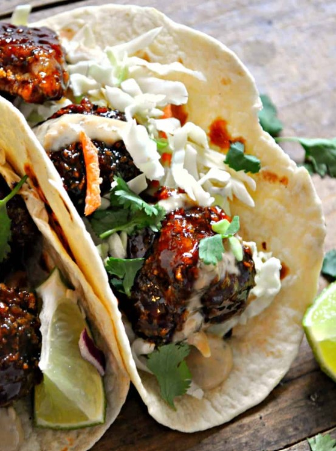

The Best Vegan Broccoli tacos
Ingredients
- 1 Head Broccoli
- 1 C. Non-Dairy Milk
- 2 tsp Apple Cider Vinegar
- 1/2 tsp Salt
- 1/4 tsp Black Pepper
- 1 C. Panko Bread Crumbs
- 1/2 C. BBQ Sauce
- 1/4 C. Brown Sugar or Coconut Sugar
- 1 tsp Garlic Powder
- Juice of 1 Lime
- Tortillas
- Cilantro
- Cabbage
- Vegan Green Goddess Dressing
Instructions
- Preheat oven to 425oF.
- Then cut the head of broccoli into small florets. Set aside.
- Set out 3 different small mixing bowls and add the following to each:
- Bowl 1: Add the almond milk and apple cider vinegar, whisk.
- Bowl 2: Add flour, salt, and pepper, whisk.
- Bowl 3: Add panko.
- Next, take a broccoli floret and dip into the bowls in thw following order:
- Almond milk mixture
- Flour mixture - coating completely, shake off the excess
- Almond milk again
- Panko - coating completely
- Spray a baking sheet with non-stick spray. Place the broccoli on the baking sheet. Repeat with all the broccoli. Spray the top of the broccoli with more non-stick spray.
- Bake for 15-20 minutes or until the broccoli is brown and crispy. Flip halfway through.
- While the broccoli is baking, make the sauce.
- In a small sauce pan, heat the BBQ sauce, sugar, garlic powder, and lime juice on medium low. Whisk together and bring to a simmer.
- Reduce heat to low and simmer until the sugar has dissolved.
- Remove from heat.
- Once the broccoli is done, toss the broccoli in the sauce - coating completely.
- Assemble the tacos: broccoli, cilantro, cabbage, and dressing in the tortilla.
- Enjoy!